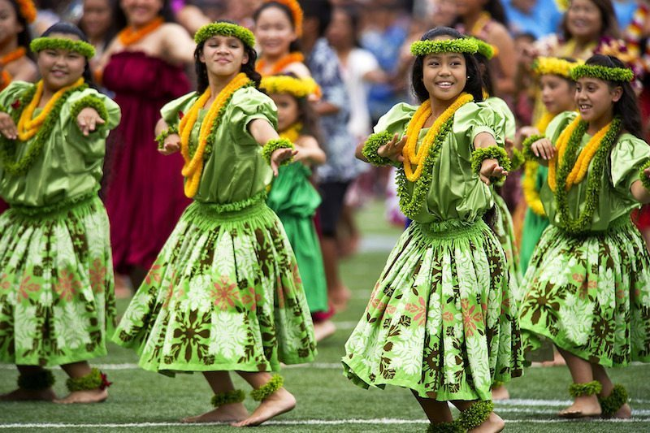

Around the World
Dancing is not something new. It was used everywhere in the world as relaxation methods, as well as entertainment. A few of this dances have become very popular over the years. I'll present you a few but to learn more about each dance, just click the images bellow.
Austria
Waltz, it's one of those "fancy" dances that were performed at balls in Austria in the 18th century and became very popular over the years. It was one of my favourite dances during my competition years.
Brazil
Capoeira is very often confused with martial arts. It is said that it was developed by African slaves from Brazil that were forbidden to fight, so they made it look like they are dancing and eventually became extremely complex, aerobic and artistic. I'd love to learn it myself too but I never got the chance to meet an instructor in the areas I was living throughout my life.
Cuba

Salsa is a Latin dance and thought it and practiced it here in Ireland for many years. My wife and I would still attend some salsa clubs in Dublin once or twice a year. Even though it was originally invented in New York, it is considered a Cuban dance as it was invented and practiced by Cuban immigrants in the 1960's.
Hawaii
Now this is a dance that is underrated. Even though it looks effortless, it is in fact quite difficult to perform correctly. But in fairness this is the only dance that I don't mind watching more than practicing, especially when danced by the beautiful Hawaiian girls.
Hungary
Of course I can't leave out the Csárdás. As I am Hungarian and the dance is our national dance, I had to include it. I know it's not as famous as the rest on the list, but I really enjoy it and quite often perform it, as any birthday or anniversary celebrated in our house, ends up in a Csárdás session.
Ireland
Irish dance is usually a group dance and is performed in a line. Honestly, just like most people didn't hear about Csárdás, the same way we never learned about Irish dance in school. Don't know why this beautiful dance was left out of our curriculum, but I'm happy I found out about it. I had the pleasure to meet extraordinary Irish dancers who, just like Martha Graham, managed to combine the modern music with this "rigid" dance and made it look like out of this world. I'm definitely going to sign up for an adult course as soon as I'll have more time for myself. At the moment I have to concentrate on this website ;)
Spain

Flamenco is a dance made popular around the world by Joaquín Cortés. He is considered the father of modern Flamenco. It has inspired Latin dancers around the world to integrate it in their dances, regardless of their style. Paso Doble is the most common to use Flamenco steps in it all the time.
Turkey
Belly dance is an Egyptian dance but is most famous in Turkey as the style in Turkey is more relaxed and it was often performed to tourists as a form of entertainment, which made it famous. I recommend to everyone to try an online YouTube tutorial to see how difficult and underrated this dance is. plus it would make a good family entertainment for a night.